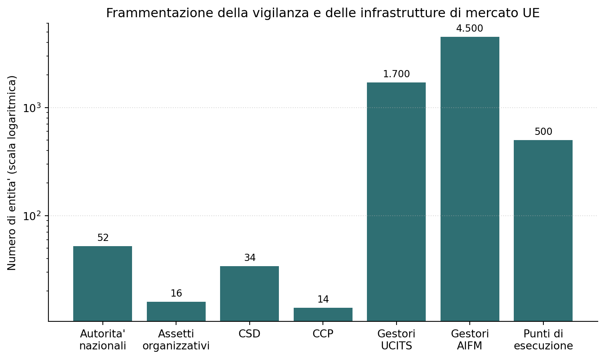
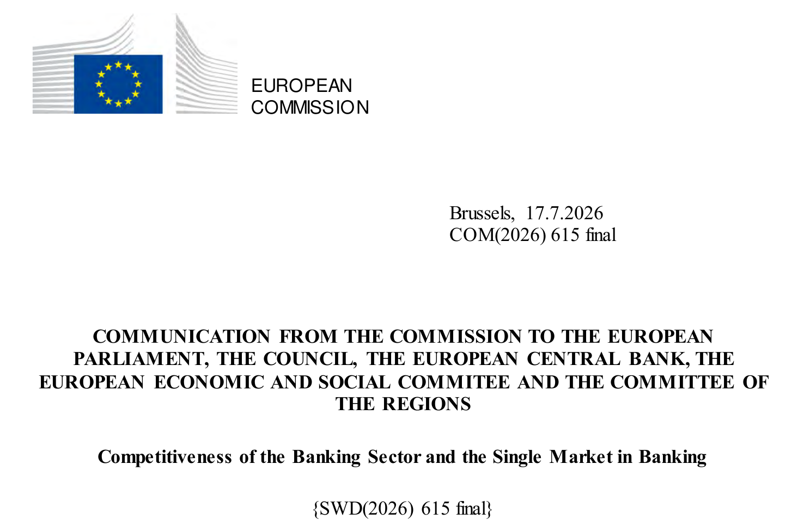
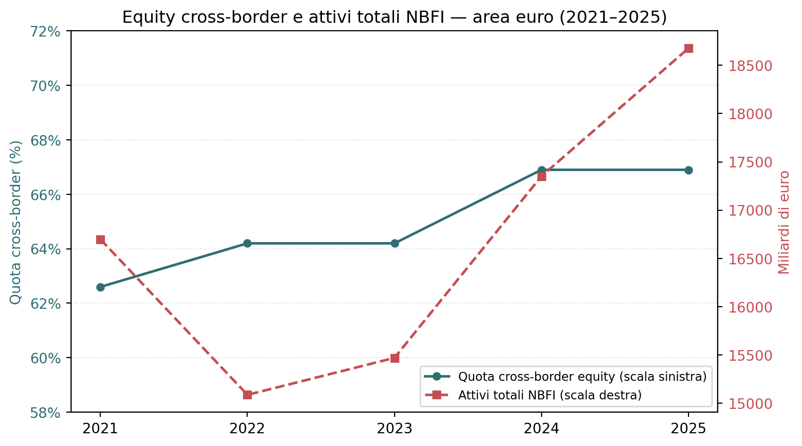
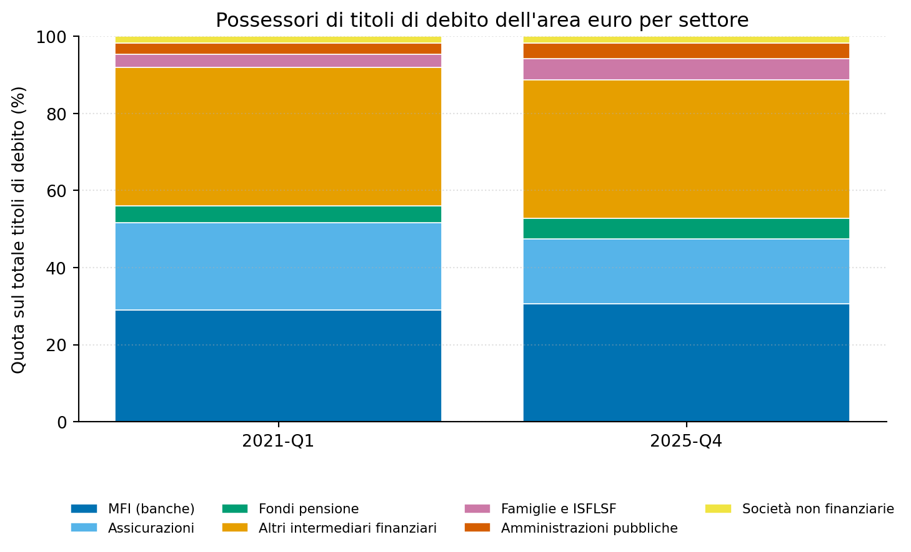

Figura 2: Scala della frammentazione nei principali segmenti della vigilanza e delle infrastrutture di mercato dell’Unione europea. Fonte: ECB Occasional Paper 383.
Risparmio, vigilanza e banche nella nuova agenda del mercato unico europeo
Paolo Volterra ![]()
Nel febbraio 2026 la Commissione europea ha presentato “One Europe, One Market”, una strategia per completare il mercato unico dell’Unione entro la fine del 2027. Parlamento europeo, Consiglio e Commissione hanno formalizzato gli impegni in una Joint Roadmap firmata il 24 aprile 2026, articolata in cinque assi di intervento: semplificazione normativa, integrazione del mercato unico, politica commerciale, energia e trasformazione digitale. Questo documento approfondisce l’asse relativo all’integrazione dei mercati finanziari, comunemente indicato come Unione dei Risparmi e degli Investimenti, ricostruendone la genealogia a partire dai rapporti Draghi e Letta del 2024 e analizzando la proposta di riforma della vigilanza sui mercati dei capitali sviluppata dalla Banca Centrale Europea a supporto del pacchetto legislativo della Commissione.
Unione Europea, mercato unico, Capital Markets Union, Unione dei Risparmi, vigilanza finanziaria, ESMA, Draghi, Letta

Figura 1: La Comunicazione della Commissione europea del 17 luglio 2026 sulla competitività del settore bancario e il mercato unico bancario.
Il punto di partenza più efficace non è l’annuncio politico di febbraio né la Roadmap istituzionale di aprile, ma il documento adottato dalla Commissione il 17 luglio 2026: la Comunicazione sulla competitività del settore bancario e sul mercato unico bancario [1]. È l’ultimo capitolo, per ora, di un percorso più lungo: dopo anni di Capital Markets Union, Unione bancaria incompleta, rapporti Draghi e Letta e nuova Savings and Investments Union, la Commissione colloca esplicitamente il settore bancario dentro la costruzione del mercato unico finanziario. La tesi di questo documento è che la Roadmap non realizza ancora un mercato finanziario unico, ma sposta il baricentro dell’agenda europea dalla sola armonizzazione normativa alla capacità effettiva di vigilare, integrare e mobilitare il risparmio su scala continentale.
Da qui si può leggere a ritroso l’intera sequenza. Il mercato unico europeo compie oltre trent’anni ma resta, secondo la stessa valutazione della Commissione, un progetto incompiuto: le barriere regolamentari residue tra i 27 Stati membri continuano a frenare la produttività e la capacità competitiva dell’Unione rispetto a Stati Uniti e Cina [2]. Il 12 febbraio 2026 la presidente della Commissione europea Ursula von der Leyen ha presentato al vertice dei leader dell’Unione una nuova strategia, denominata “One Europe, One Market”, con l’obiettivo dichiarato di trasformare un mercato ancora frammentato in un mercato pienamente integrato entro la fine del 2027.
Quella stessa giornata, al Retreat informale dei leader UE di Alden Biesen, i capi di Stato e di governo hanno accolto la sfida lanciata da Enrico Letta di passare da un mercato unico incompleto a un mercato realmente unico per l’Europa; il presidente del Consiglio europeo António Costa ha sottolineato l’urgenza di portare avanti questo lavoro nel corso del 2026 e del 2027 [3]. La Jacques Delors Friends of Europe Foundation ha pubblicato in aprile un paper che anticipa metodo e architettura poi confluiti nella strategia — costruito attorno a una matrice che la pubblicazione stessa attribuisce alla presentazione di Letta al Retreat — articolato in tre pilastri, Unione dei Risparmi e degli Investimenti, Unione dell’energia, innovazione e connettività, sorretti da tre leve orizzontali, semplificazione normativa, ricerca e coesione sociale e territoriale [4]. Sul pilastro finanziario, il paper aggiunge un elemento che la Roadmap ufficiale deliberatamente evita per la presenza di forti resistenze politiche: la proposta di un’obbligazione europea unica (eurobond o safe asset comune), che consolidi sotto un solo marchio le emissioni delle diverse istituzioni UE — attese vicine ai mille miliardi di euro entro fine 2026 — per colmare l’assenza di un titolo pubblico europeo paragonabile, per profondità e liquidità, al mercato dei Treasury statunitensi.
La strategia ha assunto forma istituzionale il 24 aprile 2026, quando Parlamento europeo, Consiglio dell’Unione europea e Commissione hanno firmato una Joint Roadmap che impegna le tre istituzioni su tempi e obiettivi condivisi [5]. Il documento individua cinque assi strategici di intervento: la semplificazione delle norme esistenti, un mercato unico più integrato — che include la rimozione delle dieci barriere considerate più dannose —, una politica commerciale più assertiva, la riduzione dei prezzi dell’energia e la decarbonizzazione, e infine la transizione digitale e nell’intelligenza artificiale.
La Roadmap prevede un meccanismo di governance esplicito: le tre istituzioni si incontrano su base trimestrale per verificare l’avanzamento, individuare ostacoli, coordinare le azioni e aggiornare l’elenco delle iniziative legislative in allegato al documento. La Commissione si impegna a presentare le proposte legislative previste, Parlamento e Consiglio a trattarle come priorità politiche nel proprio calendario legislativo, e gli Stati membri a garantirne l’attuazione e l’applicazione effettiva.
In questa prospettiva, “One Europe, One Market” può essere letto anche come prosecuzione politico-funzionale del ciclo aperto con NextGenerationEU e con i piani nazionali di ripresa e resilienza, ma non come una sua prosecuzione giuridica o finanziaria. Il PNRR ha usato debito comune europeo e piani nazionali per sostenere riforme e investimenti dopo la crisi pandemica; la nuova Roadmap sposta invece il baricentro su regole comuni, mercati più profondi, energia, digitale e mobilitazione del risparmio privato. La continuità sta nella diagnosi — la scala nazionale non basta più per produttività, transizione e competitività — mentre la discontinuità sta nello strumento: meno trasferimenti e prestiti pubblici europei, più integrazione strutturale del mercato unico.
Il documento procede in quattro passaggi. Prima isola il pilastro finanziario della Roadmap, perché è quello in cui la distanza tra mercato unico formale e mercato unico effettivo è più visibile. Poi ricostruisce il problema tecnico della vigilanza frammentata sui mercati dei capitali. In terzo luogo collega questa agenda ai rapporti Draghi e Letta e alla fase più recente dell’Unione bancaria. Infine valuta i limiti ancora aperti: destinazione del risparmio europeo, vincoli nazionali alla liquidità bancaria e assenza di una garanzia comune dei depositi.
All’interno del secondo asse strategico, quello dedicato a un mercato unico più integrato, rientra un gruppo di iniziative comunemente indicato con l’espressione Unione dei Risparmi e degli Investimenti (Savings and Investments Union). Sebbene questa etichetta non compaia come voce autonoma nell’elenco ufficiale degli interventi prioritari della Roadmap, essa raggruppa tre dossier legislativi specifici, con proposta sulle cartolarizzazioni prevista nel secondo trimestre 2025 e per i pacchetti su pensioni e vigilanza nel quarto trimestre 2025, ed elevato obiettivo di accordo entro la fine del 2026: un nuovo quadro europeo per le cartolarizzazioni, un pacchetto sulle pensioni integrative e un pacchetto di integrazione e vigilanza dei mercati [5].
| Dossier legislativo rilevante per l’Unione dei Risparmi | Data proposta | Target accordo | Funzione nel progetto |
|---|---|---|---|
| EU securitisation framework | Q2 2025 | Fine 2026 | Riattivare il mercato europeo delle cartolarizzazioni come canale di trasferimento del rischio e liberazione di capitale bancario |
| Supplementary pensions package | Q4 2025 | Fine 2026 | Canalizzare risparmio di lungo periodo verso investimenti produttivi e mercati dei capitali |
| Market integration and Supervision package | Q4 2025 | Fine 2026 | Rafforzare il ruolo europeo della vigilanza sui mercati e ridurre frammentazione nazionale |
Quest’ultimo dossier, denominato nella Roadmap “Market integration and Supervision package”, costituisce il nucleo tecnico più rilevante dell’intera Unione dei Risparmi: riguarda la riorganizzazione della vigilanza sulle infrastrutture di mercato europee, oggi frammentata tra le autorità nazionali. Il dossier ha ricevuto un parere formale della Banca Centrale Europea il 9 aprile 2026 [6].
Accanto a questi dossier, la Roadmap colloca due snodi bancari di natura diversa: il rapporto sulla competitività del settore bancario, adottato il 17 luglio 2026, e le modifiche al quadro bancario attese nel primo trimestre 2027 con obiettivo di accordo nel quarto trimestre dello stesso anno [5]. La distinzione è rilevante: i tre dossier della tabella riguardano direttamente la costruzione dei mercati dei capitali, mentre gli interventi bancari preparano il collegamento tra quei mercati e il principale canale europeo di intermediazione del risparmio.
La Savings and Investments Union non è concepita come alternativa all’Unione bancaria: banche e mercati dei capitali devono svilupparsi in parallelo, perché le banche restano il principale canale di intermediazione europeo e possono facilitare l’accesso delle imprese a strumenti di debito, capitale e cartolarizzazione [1]. Questo obiettivo si colloca dentro un’agenda di semplificazione, proporzionalità e rimozione delle barriere nazionali che ancora limitano l’operatività transfrontaliera dei gruppi bancari [7]. Tra gli ambiti politicamente sensibili della fase 2027 rientrano i depositi, i titoli di Stato, le fusioni cross-border, le piccole banche, il trattamento degli NPL e possibili interventi su Basilea 3 [8].
La vigilanza finanziaria dell’Unione europea può essere organizzata secondo sei modelli organizzativi — dal modello pienamente settoriale al modello pienamente integrato, passando per varianti ibride di tipo “twin peaks” — di cui cinque risultano effettivamente in uso, spesso in forme miste, tra gli Stati membri [9]. Il risultato è un sistema composto da cinquantadue autorità nazionali distinte, organizzate secondo sedici assetti istituzionali differenti: quattordici dei ventisette Stati membri hanno adottato un modello di vigilanza pienamente integrato, quattro un modello twin-peaks o sue varianti ibride, quattro un modello puramente settoriale e cinque un modello settoriale parzialmente integrato.
Il grado di frammentazione emerge con chiarezza dai dati settoriali. I depositari centrali di titoli attivi nell’Unione sono trentaquattro, e ciascuna autorità nazionale ne supervisiona tipicamente uno o due, senza alcun confronto sistematico tra le prassi adottate nei diversi paesi. Le controparti centrali autorizzate sono quattordici, ma la concentrazione dell’attività è elevata: le due maggiori, Eurex in Germania e LCH SA in Francia, gestiscono margini medi giornalieri rispettivamente di 74 e 40 miliardi di euro, a fronte di una media europea di 10 miliardi. Nel settore della gestione del risparmio operano circa 1.700 società di gestione di fondi armonizzati e 4.500 gestori di fondi alternativi autorizzati: il fondo armonizzato medio europeo ha un patrimonio netto di 356 milioni di euro, contro i 2,6 miliardi di dollari del fondo comune statunitense medio. Sul fronte delle sedi di negoziazione, l’Unione conta circa 500 punti di esecuzione tra mercati regolamentati, sistemi multilaterali, sistemi organizzati e internalizzatori sistematici, contro un numero nettamente inferiore di infrastrutture equivalenti negli Stati Uniti, a fronte di una capitalizzazione di mercato obbligazionario e azionario statunitense stimata più di quattro volte superiore a quella europea [9].
| Ambito | Evidenza quantitativa | Lettura analitica |
|---|---|---|
| Autorità nazionali | 52 | La vigilanza resta distribuita tra molte autorità domestiche |
| Assetti organizzativi | 16 | Gli Stati membri usano modelli istituzionali eterogenei |
| Depositari centrali di titoli | 34 | Le autorità nazionali supervisionano in genere uno o due CSD |
| Controparti centrali | 14 | Il settore è concentrato, ma la vigilanza resta nazionale |
| Gestori UCITS | 1.700 | La scala media dei fondi europei resta inferiore a quella statunitense |
| Gestori AIFM | 4.500 | L’asset management è ampio ma regolato in modo frammentato |
| Punti di esecuzione | circa 500 | La struttura di mercato è dispersa rispetto agli Stati Uniti |

Figura 2: Scala della frammentazione nei principali segmenti della vigilanza e delle infrastrutture di mercato dell’Unione europea. Fonte: ECB Occasional Paper 383.
Tre ordini di problemi strutturali derivano da questa frammentazione. In primo luogo, i mandati delle autorità nazionali restano concentrati sui rischi domestici, e in alcuni casi — come per i prestatori di servizi in cripto-attività — non esiste nemmeno un obbligo legislativo di coordinamento transfrontaliero tra autorità. In secondo luogo, l’implementazione divergente delle stesse norme europee tra Stati membri genera costi di conformità ripetuti per gli operatori che vogliono espandersi oltre confine. In terzo luogo, in alcuni casi la stessa integrazione regolamentare voluta dal legislatore europeo viene vanificata dal mantenimento della vigilanza a livello nazionale: il regolamento sui mercati delle cripto-attività, disegnato per una supervisione transfrontaliera, ha finito per lasciare la vigilanza effettiva alle sole dodici autorità nazionali che avevano già autorizzato operatori al momento della rilevazione, con una revisione tra pari sull’autorità maltese che ha rilevato carenze nel processo autorizzativo [9].
Le riforme europee hanno ridotto i costi di compensazione senza eliminare la complessità derivante dalla pluralità di controparti centrali e depositari centrali di titoli, che continua a imporre costi di accesso e coordinamento agli operatori [10]. In questo contesto, le iniziative sull’infrastruttura digitale (come il DLT Pilot Regime per i mercati finanziari e le sperimentazioni sull’Euro digitale) mirano a snellire le procedure di regolamento ma non sostituiscono, nel breve termine, l’esigenza di una convergenza nella vigilanza sui depositari centrali.
Il modello proposto non prevede la creazione di un’unica autorità di vigilanza europea competente su tutti i mercati finanziari, ma un’architettura a due livelli, esplicitamente ispirata al meccanismo di vigilanza unica già in vigore per le banche significative dell’area euro: vigilanza diretta a livello europeo, affidata all’Autorità europea degli strumenti finanziari e dei mercati, per le entità di maggiori dimensioni e a rilevanza sistemica o transfrontaliera; vigilanza nazionale mantenuta per tutte le altre [9].
Un’analisi di sensitività calibrata sulla proposta legislativa della Commissione di dicembre 2025 produce risultati in larga parte coincidenti con quelli della Commissione stessa [9]. Per i depositari centrali di titoli, circa il quaranta per cento del totale — quindici depositari su trentaquattro — soddisfa i criteri dimensionali e di appartenenza a gruppi transfrontalieri che ne giustificherebbero la vigilanza diretta europea, una cifra quasi identica a quella indicata dalla Commissione. Per le controparti centrali, l’analisi individua tra cinque e sei candidate su quattordici, contro le nove proposte dalla Commissione, differenza spiegabile con un criterio aggiuntivo relativo all’appartenenza a gruppi con altre infrastrutture di mercato. Per i gestori di fondi, non si propone vigilanza diretta europea ma un rafforzamento del ruolo di convergenza supervisoria dell’Autorità europea sui dieci-quindici maggiori gruppi, che da soli rappresentano oltre la metà del patrimonio complessivo dei fondi dell’area euro — una soglia coerente con la proposta della Commissione di sottoporre a revisione annuale i gestori con patrimonio netto superiore a 300 miliardi di euro. Per i prestatori di servizi in cripto-attività, l’analisi raccomanda invece la vigilanza diretta europea per l’intero settore, unico caso in cui la proposta si discosta dal modello a due livelli, giustificata dalla natura strutturalmente transfrontaliera e dal grado di concentrazione oligopolistica del settore.
Questo impianto si colloca in una linea di continuità con le proposte formulate nei rapporti Letta e Draghi del 2024, distinguendosi da posizioni più radicali — come quella che prevede la sostituzione delle autorità nazionali con uffici locali di un’unica autorità europea nell’arco di un decennio — presenti nel dibattito accademico e istituzionale [9].
La proposta di riorganizzare la vigilanza sui mercati dei capitali europei non nasce nel 2026. Un primo precedente diretto emerge nel rapporto sul futuro del mercato unico presentato da Enrico Letta su incarico del Consiglio europeo il 17 aprile 2024, incentrato sulla necessità di un’integrazione di lungo periodo dei mercati dei capitali europei attraverso l’armonizzazione normativa tra Stati membri, piuttosto che sulla creazione di una nuova autorità [11]. Cinque mesi più tardi, il 9 settembre 2024, il rapporto sulla competitività europea presentato da Mario Draghi su incarico della Commissione europea affronta lo stesso nodo da un’angolatura complementare, includendo tra le proprie raccomandazioni la creazione esplicita di un’autorità unica per la vigilanza sui mercati mobiliari e una piattaforma centrale per le negoziazioni, con l’obiettivo dichiarato di superare la frammentazione allora esistente e facilitare gli investimenti transfrontalieri [12]. Lo stesso rapporto Draghi indica, come priorità distinta ma collegata, la necessità di incrementare gli investimenti delle famiglie e delle imprese europee attraverso prodotti di risparmio di lungo periodo, in particolare i fondi pensione, per canalizzare il risparmio privato verso investimenti produttivi — un’indicazione che trova corrispondenza diretta nel pacchetto sulle pensioni integrative incluso oggi tra i dossier prioritari della Roadmap.
I due rapporti, insieme a un terzo contributo firmato dall’ex commissario europeo Mario Monti incentrato sulla stabilità finanziaria post-crisi 2008, convergono su un nucleo comune di raccomandazioni: un mercato dei capitali europeo più integrato e meno dipendente dal finanziamento bancario, un accesso più facile al capitale di rischio per le piccole e medie imprese, una maggiore diversificazione delle fonti di finanziamento disponibili e un ruolo più attivo degli investitori istituzionali.
I terreni comuni tra i tre rapporti riguardano cartolarizzazioni, vigilanza, infrastrutture di mercato, pensioni e schemi di risparmio [13]. La Savings and Investments Union può essere letta come il tentativo di riunire due cantieri finora separati, Unione bancaria e Capital Markets Union: in un sistema europeo ancora bancocentrico, lo sviluppo dei mercati non può essere costruito contro le banche, ma deve passare anche dalla loro capacità di raccogliere risparmio, trasformarlo e accompagnare imprese e investitori verso strumenti di mercato [14].
Parallelamente al percorso legislativo della Roadmap, la Banca Centrale Europea ha adottato un provvedimento di natura amministrativa che si inserisce nello stesso orizzonte di riduzione della frammentazione del sistema finanziario europeo. Con la decisione del 13 febbraio 2026, il Consiglio direttivo della Banca Centrale Europea ha delegato ai responsabili delle unità di vigilanza la competenza ad adottare, entro criteri predefiniti, le decisioni relative a fusioni, scissioni e acquisizioni di partecipazioni qualificate che coinvolgono banche significative sottoposte a vigilanza unica [15]. Il perimetro diretto riguarda quindi le significant supervised entities: fusioni che coinvolgono almeno una banca significativa, scissioni in cui l’entità che realizza l’operazione è significativa, e acquisizioni effettuate da una banca significativa. Le less significant institutions possono essere interessate solo in modo indiretto, ad esempio se entrano in un’operazione con una banca significativa o se la valutazione ricade nel perimetro consolidato di un gruppo vigilato dalla BCE. La delega si applica quando l’impatto dell’operazione sui fondi propri e sulla posizione di liquidità della banca resta entro soglie prestabilite e non emergono criticità sul piano della governance, riservando invece alla procedura di non obiezione del Consiglio direttivo i casi più complessi o sensibili, o le decisioni di segno negativo.
Pur non facendo parte del pacchetto legislativo formale della Roadmap, il provvedimento va nella stessa direzione individuata dal pacchetto di integrazione e vigilanza dei mercati: ridurre l’attrito procedurale alle operazioni di consolidamento transfrontaliero nel settore finanziario europeo, un obiettivo che sia il rapporto Draghi sia lo studio della Banca Centrale Europea sulla vigilanza dei mercati dei capitali indicano come condizione necessaria per rafforzare la competitività del sistema finanziario dell’Unione.
La frammentazione nazionale dei mercati dei capitali limita la trasformazione del risparmio europeo in investimenti produttivi nell’Unione: nelle Considerazioni finali sul 2025, Fabio Panetta colloca la finanza tra i comparti in cui il mercato unico resta incompleto, segnalando proprio questo nesso tra competitività europea, integrazione finanziaria e struttura del sistema bancario [16]. Nell’intervento ABI del 15 luglio 2026, lo stesso Panetta interpreta il consolidamento bancario come un processo potenzialmente positivo, ma non automatico: le aggregazioni vanno valutate caso per caso, in collaborazione con BCE, IVASS, Consob e autorità estere, sulla base di capitale, sostenibilità dei piani industriali, sinergie, governance, concorrenza e vicinanza all’economia reale [17].
Questa impostazione distingue implicitamente le banche significative, inserite direttamente nel circuito SSM e nel perimetro della Decisione ECB/2026/5, dalle banche meno significative, per le quali Banca d’Italia continua a svolgere un ruolo centrale di vigilanza nazionale. Lo stesso vale per i sistemi italiani di garanzia dei depositi, sui quali l’Istituto opera come autorità designata [18].
Il raccordo italiano passa attraverso una divisione istituzionale delle competenze che resta nazionale anche dentro un’agenda europea più integrata. Il mercato azionario rientra nel perimetro Consob, che vigila su mercati finanziari, tutela degli investitori, trasparenza informativa e correttezza degli operatori [19]. L’ex ISVAP, dal 2013 IVASS, rileva invece sul lato assicurativo, dove vigila su imprese e gruppi assicurativi, intermediari, conglomerati finanziari e stabilità del sistema, ma non sostituisce Consob nella vigilanza sui mercati mobiliari [20].
Le ricadute per il risparmiatore italiano passano soprattutto dai canali di intermediazione, più che da un effetto immediato sul conto corrente o sul lavoro operativo di filiale. Una maggiore integrazione dei mercati dei capitali può incidere sull’offerta e sulla liquidità di obbligazioni societarie, strumenti quotati e fondi, riducendo la frammentazione nazionale che oggi limita scala e profondità del mercato.
I PIR sono un caso particolarmente sensibile: nascono per convogliare risparmio di medio-lungo periodo verso azioni e obbligazioni di imprese italiane, spesso tramite fondi comuni, gestioni patrimoniali o contratti assicurativi. Proprio per questo beneficerebbero di mercati più liquidi e di costi di distribuzione più efficienti, ma restano esposti a concentrazione domestica, rischio di liquidità, costi e vincolo quinquennale [21].
Lo stesso vale per il risparmio intermediato: la pubblicazione statistica “Mercato finanziario” della Banca d’Italia monitora congiuntamente valori mobiliari, portafogli di gestioni patrimoniali, fondi comuni e assicurazioni, cioè i veicoli attraverso cui il risparmio delle famiglie entra nei mercati [22]. Per i fondi pensione, il collegamento con la Roadmap è ancora più diretto: il pacchetto sulle pensioni integrative mira a trasformare una quota più ampia di risparmio previdenziale in capitale paziente, mentre COVIP mostra che competenze finanziarie e previdenziali e accesso alla consulenza aumentano la probabilità di scegliere comparti con maggiore componente azionaria, un punto centrale per l’orizzonte di lungo periodo della Savings and Investments Union [23].
Il percorso di integrazione ancora da compiere resta ampio. La Roadmap interviene su vigilanza, cartolarizzazioni, pensioni integrative e quadro bancario, ma lascia aperti tre limiti strutturali: una parte crescente del risparmio finanziario europeo continua a cercare profondità fuori dall’Unione; le prassi nazionali trattengono liquidità dentro perimetri domestici; la garanzia dei depositi resta nazionale, nonostante vigilanza e risoluzione siano già state europeizzate in misura significativa.
Il primo limite riguarda la destinazione del risparmio. Tra il 2015 e il 2024 gli attivi degli intermediari finanziari non bancari nell’Unione sono passati dal 92 al 113 per cento del prodotto interno lordo, e la quota di investimenti azionari transfrontalieri detenuti da questi intermediari è salita nello stesso periodo dal 57 al 70 per cento circa. L’incremento è stato trainato però in larga parte da flussi diretti verso i mercati statunitensi, mentre la quota di investimenti transfrontalieri interni all’Unione europea è rimasta sostanzialmente ferma attorno al 30 per cento [9].
Sui dati di area euro, disponibili dal 2021 con la rilevazione Securities Holdings Statistics by Sector che ha sostituito la precedente SHS [24], lo stesso fenomeno è osservabile: nel periodo 2021-2025 la quota di titoli azionari detenuti dagli intermediari finanziari non bancari dell’area euro in emittenti esterni all’area è passata dal 61,8 al 67,7 per cento. Il dato di area euro è strutturalmente più basso di quello dell’intera Unione — circa 62 per cento nel 2021 contro il 66-67 per cento stimabile per l’Unione dalla stessa traiettoria [9] — ma la tendenza all’aumento della quota transfrontaliera è confermata su entrambi i perimetri. L’assenza di dati individuali per paese extra-UE nel dataset SHSS non consente di isolare la quota diretta verso gli Stati Uniti, ma il differenziale tra la crescita complessiva del cross-border e la stabilità della quota intra-UE indica che l’incremento proviene quasi interamente da flussi verso paesi terzi.

Figura 3: Quota di titoli azionari (F511+F521) detenuti dagli intermediari finanziari non bancari dell’area euro (S12P+S12Q) in emittenti esterni all’area dell’euro (W1) sul totale mondiale (W0). Fonte: ECB Data Portal, dataset SHSS.
Il secondo limite riguarda la struttura ancora bancocentrica, ma non più esclusivamente bancaria, dell’intermediazione europea. Il dataset SHSS consente di scomporre i possessori di titoli di debito dell’area euro per settore istituzionale. Tra il primo trimestre 2021 e il quarto trimestre 2025 la quota detenuta dalle banche resta sostanzialmente stabile, dal 29,0 al 30,6 per cento del totale, mentre quella delle assicurazioni scende dal 22,6 al 16,9 per cento; aumentano invece le quote di famiglie, dal 3,3 al 5,5 per cento, e fondi pensione, dal 4,4 al 5,3 per cento, mentre gli altri intermediari finanziari restano il gruppo più ampio, stabile attorno al 36 per cento [24]. Va precisato che questa evidenza riguarda la struttura dei detentori (domanda di titoli) e non la scomposizione per settore debitore o emittente (offerta di titoli). Ciononostante, essa mostra come il settore finanziario nel suo insieme, banche comprese, continui a detenere oltre l’85 per cento dei titoli di debito dell’area euro: le banche restano un possessore importante ma non dominante, e la ricomposizione più marcata nel periodo è il trasferimento di quota dalle assicurazioni verso famiglie e fondi pensione.

Figura 4: Quota di titoli di debito (F3) dell’area euro per settore istituzionale detentore, area euro (S1, W0), 2021-2025. Fonte: ECB Data Portal, dataset SHSS.
Il terzo limite riguarda la liquidità e la garanzia dei depositi. Le prassi nazionali di segregazione della liquidità intra-gruppo continuano a trattenere fino a 250 miliardi di euro all’interno di filiali di grandi gruppi bancari operanti in più paesi dell’Unione, nonostante l’armonizzazione già raggiunta nell’ambito del meccanismo di vigilanza unica bancaria abbia prodotto, secondo una stima dell’Autorità bancaria europea, una riduzione del venti per cento nei costi di conformità delle banche vigilate [9]. Nello stesso ordine di grandezza, la rimozione dei vincoli nazionali sulla liquidità delle controllate cross-border potrebbe liberare circa 230 miliardi di euro di attività liquide di alta qualità [1].
Un nodo che resta esplicitamente fuori dal perimetro della Roadmap firmata nell’aprile 2026 è il sistema comune di garanzia dei depositi bancari a livello europeo. La proposta di European Deposit Insurance Scheme, presentata dalla Commissione nel 2015 come terzo pilastro dell’Unione bancaria, non risulta ancora adottata dai colegislatori al luglio 2026 [25]. Nel frattempo l’Unione ha rafforzato il quadro armonizzato degli schemi nazionali di garanzia dei depositi: la riforma CMDI/DGSD II del 2026 migliora la coerenza applicativa e conferma la protezione dei depositi fino a 100.000 euro, ma non realizza una mutualizzazione europea della garanzia [26]. Anche il Parlamento europeo, nel rapporto annuale 2025 sull’Unione bancaria approvato nel 2026, continua a chiedere un avanzamento dei negoziati su EDIS [27].
Questa distinzione è rilevante per le fusioni transfrontaliere: la Decisione ECB/2026/5 riduce l’attrito amministrativo delle operazioni tra banche significative vigilate dal meccanismo di vigilanza unico, ma non elimina il disallineamento tra vigilanza europea, risoluzione europea e garanzia dei depositi ancora fondata su schemi nazionali [15]. In una fusione tra banche di Stati membri diversi, la percezione del backstop sui depositi resta quindi legata alla capacità e alla credibilità del sistema nazionale di garanzia, un elemento che continua a rappresentare un ostacolo concreto alla piena realizzazione di un mercato bancario europeo integrato. Il percorso resta più graduale di una piena mutualizzazione immediata: allineare meglio responsabilità e finanziamento delle misure di gestione delle crisi, rafforzare la liquidità dei sistemi nazionali di garanzia e rendere più omogenea la protezione effettiva dei depositanti nell’Unione bancaria [1].
| Dimensione | Cosa cambia | Cosa non cambia ancora |
|---|---|---|
| Vigilanza sui mercati | La Roadmap spinge verso un ruolo europeo più forte per le entità sistemiche o transfrontaliere | La vigilanza resta nazionale per una parte ampia degli operatori |
| Risparmio privato | Pensioni integrative, fondi e cartolarizzazioni diventano strumenti centrali dell’agenda di competitività | Il risparmio europeo continua a trovare maggiore profondità nei mercati extra-UE |
| Banche | Il settore bancario viene ricollocato dentro il progetto del mercato unico finanziario | I vincoli nazionali sulla liquidità e l’assenza di EDIS limitano ancora le fusioni cross-border |
| Risparmiatori italiani | Gli effetti passano da fondi, PIR, assicurazioni, pensioni e strumenti quotati | Non c’è un effetto immediato su conto corrente, operatività di filiale o garanzia europea dei depositi |
“One Europe, One Market” segna un avanzamento perché lega in modo più stretto mercato unico, competitività, risparmio privato e vigilanza finanziaria. Il passaggio è politico prima ancora che tecnico: l’integrazione dei mercati dei capitali non viene più trattata come un dossier specialistico separato, ma come una condizione per finanziare innovazione, transizione energetica, difesa industriale e crescita delle imprese europee.
Il limite è altrettanto chiaro. La Roadmap accelera la convergenza della vigilanza e prepara nuovi canali di mobilitazione del risparmio, ma non risolve ancora tre fratture decisive: la profondità insufficiente dei mercati europei rispetto agli Stati Uniti, la permanenza di vincoli nazionali nella gestione della liquidità bancaria e l’assenza di una garanzia comune dei depositi. Per questo l’Unione dei Risparmi e degli Investimenti va letta come un cantiere di integrazione selettiva, non come il completamento immediato dell’Unione finanziaria.
La prova della strategia non sarà quindi solo l’approvazione dei pacchetti legislativi entro il 2026 e il 2027. Sarà la capacità di trasformare norme comuni in mercati più profondi, intermediari più scalabili e strumenti di risparmio più adatti a finanziare investimenti europei. Senza questo passaggio, il rischio è che il risparmio dell’Unione continui a essere abbondante ma non pienamente mobilitato per l’economia europea.
Trasparenza sull’uso dell’intelligenza artificiale
L’uso di strumenti di intelligenza artificiale generativa è dichiarato esplicitamente in quanto parte del processo di lavoro seguito nella redazione del presente documento. Tali strumenti sono stati impiegati a supporto della lettura, della sintesi, della riorganizzazione argomentativa e della revisione testuale, sempre nell’ambito di un processo pienamente controllato dall’autore.
La responsabilità per le fonti utilizzate, le analisi condotte, le verifiche effettuate, le interpretazioni proposte e le conclusioni formulate resta interamente in capo all’autore.
L’intelligenza artificiale è stata utilizzata come ambiente di supporto cognitivo ed editoriale, non come fonte primaria, autore autonomo o sostituto del giudizio critico.